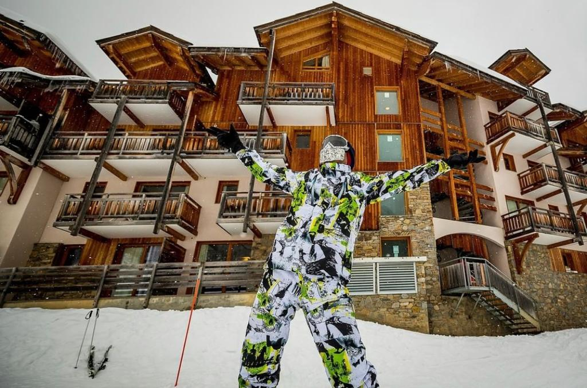
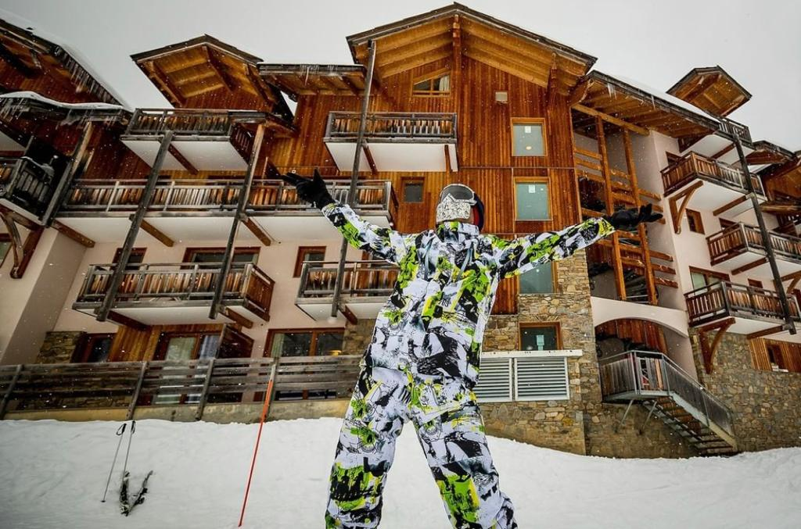

In order to start skiing in the snow you need to do a few things:
- You need to rental equipment of what you want
skiing or snowboarding
- You need to buy a ticket called Skips for how many days you want to ski,
this is basically your entry permit to the site
- Take a ski instructor who will teach you how to start skiing
- Come with a lot of confidence and don't be afraid if you fall
The two best videos of my festival ski
if you want more informtion about the festvial ski
contact me:


skiing or snowboarding
this is basically your entry permit to the site
The two best videos of my festival ski
if you want more informtion about the festvial ski
contact me: